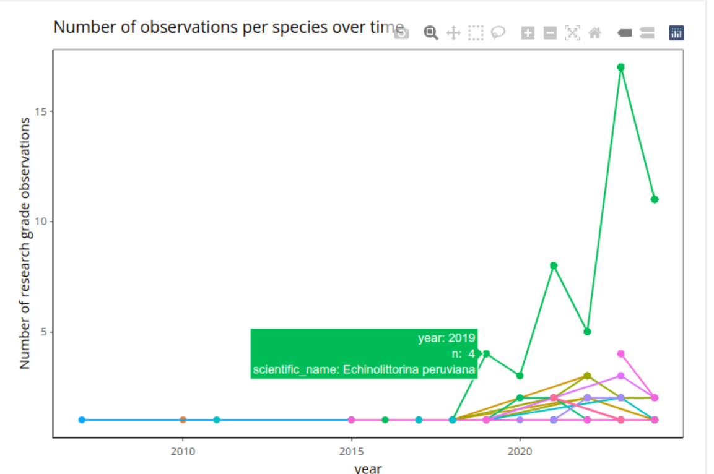
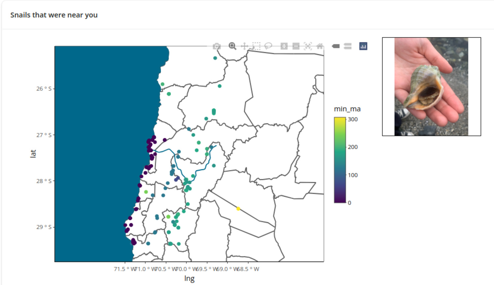
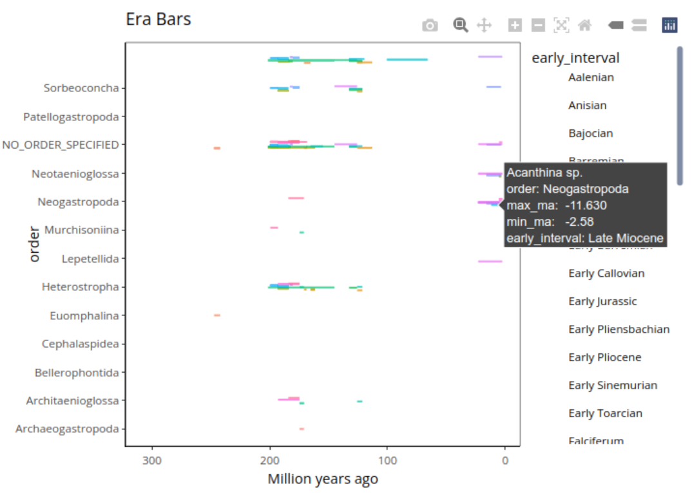

Snashboard Final Report
SNASHBOARD: A Snail Dashboard Project
Jill Hakim (jhakim2@jhmi.edu), Lulu Singer (lsinger9@jhmi.edu), Jack Zhu (jzhu117@jh.edu)
Overview
Snashboard is an interactive data visualization tool that combines citizen science research grade observations with geolocation of discovered gastropod fossils.
The goal of this project was primarily to present a large and robust dataset in a user friendly and fun way. Citizen science provides a massive advantage to researchers, generating large and comprehensive datasets that would be prohibitively costly to generate with conventional methods. iNaturalist, an image recognition cell phone app built and maintained by California Academy of Science, is a popular tool used to identify flora and fauna. Thousands of images have been uploaded, and hundreds of publications have made use of these observations. While species identification provides immediate benefit to citizen scientists using the iNaturalist app, there has heretofore not been a way for these users to make use of these observations as a dataset.
In addition to knowledge of extant snail species, an inquisitive user may be equally interested in the paleontological history of snail species in their area. As such, we have supplemented the iNaturalist data with observations generated from the Paleobiology database, an online resource of fossil discoveries. As of writing, there are no current applications that combine extinct and extant gastropod data.
Several summary graphs and statistics are generated, as are maps with tooltip enabled to provide geolocations, and functionality to see the actual uploaded species observation. To emphasize the connectivity between the user and their neighborhood snails, we have enabled a retrieval of images for each snail within the requested location.

Figure 1: Screenshot of Snashboard, with images of selected snails

Figure 2: iNaturalist species observations over time in the Atacama region demonstrating a possible population takeover of Ecginolitorina peruviana, though perhaps not deleteriously at the expense of other snail taxa

Figure 3: Fossil observations within the Atacama region in Chile, colored by the earliest possible year in million years ago the sample may have originated. Inclusion of coast shapefile makes it easy to infer oceanic snail fossils further inland may be a result of shifting coastline.

Figure 4: Geological intervals during which gastropod fossils were found in the Atacama region. The orders Architeanioglosa seems to have co-existed with many other snails in the Pilenscbachian interval approximately 170 mya, though were unable to persist for longer, unlike other orders such as Heterostropha, suggesting that they were specialized to survival during that geological period.
Research Question
Our inspiration for this project was to investigate the following umbrella question:
What snails are near me?
However, this overarching question can be broken down as follows:
- Are there ecologically or clinically significant snails where I live?
- What gastropod species are local to my area?
- How do extant gastropod taxa compare to extinct or ancient taxa?
- What geologic time periods are local snail fossils from?
Introduction and Importance
Tracking the geographic location of snails is important because snails are vital part of local ecosystem but are sensitive to changes in their environment. Snail diversity is decreasing, and some snails may be migrating north due to environmental factors, such as climate change. Snail migration may impact local ecosystems that they were a part of and or ecosystems to which they are migrating. Thus, it is critical for ecologists and conservationists to note diminishing snail populations and factors that may be correlated with such population declines (Hemming, 2023).
Some snails, such as the giant land snail are invasive species, vectors for infectious disease, and have become widespread due to the popularity of exotic pets (Gippet, Bates, Moulin, & Bertelsmeier, 2023).
In previous work, field samples have been collected to study the habitats and migrations of snails, and it would be helpful to have a static or dynamic data product to display where snail varieties are found. Individuals, such as Thomas Evereston on iNaturalist, created a search tool for freshwater and land snails where users can search for and identify snails and other gastropods of interest as well as note when they spot specific species. However, the search tools for freshwater and land snails are separate from each other (Everest, 2023), and do not feature fossil record data for snails once living in the area.
Research Paradigms
We wanted to explore the following paradigms:
- Retrieving data from APIs
- Working with spatial data
- Dashboard programming
Retrieving data from APIs and Working with Spatial Data
iNaturalist Database
For our Snashboard Dashboard, we obtained data from the OpenStreetMap API from the osmdata R package, iNaturalist API through the rinat R package, the Paleobiology Database (PBDB) API through the paleoDB R package, and data from the GBIF API using httr and jsonlite R packages.
We utilized the osmdata package to retrieve spatial data from OpenStreetMap (OSM) using the getbb() function. The getbb() function retrieves the longitude and latitude bounds for the location that the user of the dashboard specifies.
bb <- eventReactive(input$enter, {
req(input$location)
getbb(input$location)
})The opq(bbox = bb()) function creates an API query for the bounding box. The add_osm_feature function in add_osm_feature(key = ‘boundary’, value = “administrative”) (key = ‘boundary’, value = “administrative”) filters the query by administrative features, such as city and or state. The osmdata_sf() functionfetches the data queried and returns it as an sf, or spatial features object.
map_feat <- eventReactive(input$enter, {
opq(bbox = bb()) %>%
add_osm_feature(key = 'boundary', value = "administrative") %>%
osmdata_sf()
})iNaturalist data points are rendered over the administrative bounds, and the geom_sf() function in geom_sf(data = map_feat()$osm_lines) is utilized to add spatial lines to the administrative bounds.
output$inat_map <- renderPlotly({
if (nrow(inat_data()) > 0) {
p <- inat_data() %>%
ggplot() +
geom_point(aes(x = longitude, y = latitude, color = scientific_name), show.legend = FALSE) +
geom_sf(data = map_feat()$osm_lines) +
xlim(bb()[c(1, 3)]) +
ylim(bb()[c(2, 4)]) +
theme(legend.position = "none")
ggplotly(p, source = "inat_map")
} else {
no_data_p
}
})The rinat package is utilized to fetch data from iNaturalist. The get_inat_obs() function retrieves observations from the iNaturalist data set and limits the search to organisms with the taxon name, “Gastropoda,” which includes snails. The bounds=bounds statement defines the area for the query utilizing the coordinates retrieved from the osmdata package. The quality = “research” statement filters the query for research-grade observations, only, and the maxresults=10000 statement limits the search results count to 10,000 results. Most region-level locations (i.e. city, county, region, etc.) will have fewer than 1000 results, but this prevents accidental “rude” querying if a user attempts to query a large state or entire country. For reference, Baltimore, MD returns 254 results, and the entire state of Maryland returns 9,256 results.
inat_data <- eventReactive(input$enter, {
bounds <- bb()[c(2,1,4,3)]
get_inat_obs(
taxon_name = "Gastropoda",
bounds = bounds,
quality = "research",
maxresults = 10000
)
})When the iNaturalist data is fetched from the iNaturalist API, it is stored in the inat_data data frame, which also contains the image URLs corresponding to the observations.
The iNaturalist data is plotted on a map with the bounds of the user-specified location through the Plotly object output$inat_map. When the user clicks on a point of the map, the information about the click event is captured by Plotly’s event_data() function. The pointNumber index is adjusted by 1 since Plotly uses zero-based indexing while R uses one-based indexing. The clicked point is then matched with its corresponding row in the inat_data data frame. The corresponding image URL is extracted from the image_url column of inat_data(), if available. If a valid URL is available for the image corresponding to the clicked iNaturalist observation, an image will be generated. If not, the message “No image available for this observation” will appear.
# Render the iNaturalist image with slider input
output$clicked_image <- renderUI({
point_data_inat <- event_data("plotly_click", source = "inat_map")
req(point_data_inat)
point_id_inat <- point_data_inat$pointNumber + 1
img_url_inat <- inat_data()$image_url[point_id_inat]
img_size_inat <- paste0(input$image_size, "px")
if (!is.null(img_url_inat) && nzchar(img_url_inat)) {
tags$img(
src = img_url_inat,
alt = "Observation Image",
style = paste("width:", img_size_inat, "; height:", img_size_inat, "; object-fit: contain; border: 1px solid black;")
)
} else {
tags$p("No image available for this observation.")
}
})Paleobiology Database (PBDB)
We utilized the paleobioDB package and pbdb_occurences() function to query Gastropoda fossil occurrence data from the Paleobiology Database (PBDB) during the Late Cretaceous Period (65 to 100 million years ago) in specific geographical areas in the United States. The query results are loaded into the reactive data frame pbdb_data, which is used for map and graph visualizations for the “Snails that were near you” section of the Snashboard Dashboard.
On the Paleobiology Database side, the visualizations include the following:
Explore Tab
- A map of fossil occurrences within the coordinate bounds of the location (city, state, etc.) that the user searches for in the dashboard
- An Eras Bars bar chart that displays the geologic eras by taxonomic order of the fossils found
Taxa Tab
- An abundance bar chart and data table that shows the frequency of genera of snails found within the location that the user is searching for
All Observations Tab
- A data table of all the fossil observations within the geographic bounds of a user inputted location is shown
Global Diversity Information Facility (GBIF) API
ThePaleobiology Database (PBDB) did not have fossil specimen images, so we pulled the corresponding images to fossil observations through the Global Diversity Information Facility (GBIF) API with the httr and jsonlite packages, which handle the API request and parses the JSON response from the API, respectively.
In the function, get_gbif_image, an API is constructed with the API endpoint URL. The URL string is passed through to httr::GET, which sends a request to the endpoint. After receiving a response, the JSON content is parsed into a list.
# Function to Fetch GBIF Image
get_gbif_image <- function(taxon_name) {
url <- paste0("https://api.gbif.org/v1/occurrence/search?mediaType=StillImage&scientificName=", URLencode(taxon_name))
res <- httr::GET(url)
if (res$status_code == 200) {
data <- jsonlite::fromJSON(content(res, "text"))
if (!is.null(data$results) && length(data$results) > 0 && !is.null(data$results$media[[1]])) {
img_url <- data$results$media[[1]]$identifier[1]
return(img_url)
}
}
return(NULL)
}The render function in the Shiny UI, output$clicked_pbdb image captures a click event from the PBDB map through the reactive variable, point_data_pbdb. When a click event is confirmed, the point index of the plotly click is adjusted to one-based indexing (Plotly uses zero-based indexing) so that the corresponding genus name is extracted. Afterwards, the get_gbif_image() function is called with genus_name_pbdb, which is the argument that contains the genus name of the fossil record that the user clicked on in the PBDB map. Within the function, a GET request is sent to the GBIF API, and a query is conducted for occurrences of the genus with images.If an image is available, the corresponding image is displayed. Otherwise, the message, “No image available for genus,” appears.
output$clicked_pbdb_image <- renderUI({
point_data_pbdb <- event_data("plotly_click", source = "pbdb_map")
req(point_data_pbdb)
point_id_pbdb <- point_data_pbdb$pointNumber + 1
genus_name_pbdb <- pbdb_data()$genus[point_id_pbdb]
img_url_pbdb <- get_gbif_image(genus_name_pbdb)
img_size_pbdb <- paste0(input$image_size, "px")
if (!is.null(img_url_pbdb) && nzchar(img_url_pbdb)) {
tags$img(
src = img_url_pbdb,
alt = paste("Fossil image of", genus_name_pbdb),
style = paste("width:", img_size_pbdb, "; height:", img_size_pbdb, "; object-fit: contain; border: 1px solid black;")
)
} else {
tags$div(
style = "padding: 20px; border: 1px solid black; background-color: #f9f9f9;",
tags$p(
style = "font-size: 16px; font-weight: bold; color: #333;",
paste("No image available for genus:", genus_name_pbdb)
)
)
}
})Dashboard Programming
The output$inat_map outputs an interactive map with the plotly and ggplot2 packages. The interactive map shows snail observations from the iNaturalist database within the administrative bounds of the location the user enters in the dashboard. The records observed are filtered by user-defined years indicated by the slider input.
We also included a download button in the user interface:
# Adding the download button inside the sidebar so that users can download csv of data
downloadButton("download_combined", "Download Data (CSV)")The download options are handled by the downloadHandler() function in the server block of the Shiny application. Users are able to download iNaturalist or Paleobiology database data for their input location with select columns of their choice as a CSV file. The file name of the data set is the data source_date. For example, if an iNaturalist table was downloaded on December 19th, the file name would be “inat_data_2024-12-19.csv”.
output$download_combined <- downloadHandler(
filename = function() {
paste0(input$data_source, "_data_", Sys.Date(), ".csv")
},
content = function(file) {
req(input$data_source, input$selected_columns)
# Select the appropriate dataset
data_to_download <- if (input$data_source == "inat") {
inat_data()
} else {
pbdb_data()
}
# Check if any columns are selected
if (length(input$selected_columns) == 0) {
showNotification("Please select at least one column to download.", type = "error")
return(NULL)
}
# Export only selected columns
write.csv(
data_to_download[, input$selected_columns, drop = FALSE],
file,
row.names = FALSE
)
}
)Limitations and Future Directions
One limitation of our Snashboard database is that the distribution of paleobiology data is dependent on (1) paleontological research and (2) geologic conditions that favored fossilization. As a result, there may be data gaps in areas where there is not likely to be fossils identified, either due to a lack of interest by paleontologists, fewer sedentary deposits, or a lack of access to such deposits (ex. urban areas). For example, paleobiology data for Baltimore is not available on this dashboard.
Another limitation of our Snashboard database is that the extant snail data we utilized comes from an iNaturalist, a citizen science database, meaning that data is collected through members of the public. The richness of the data obtained for any location partially depends on how densely populated the location and whether members of the public are interested in studying snails.
Lastly, the Paleobiology Database does not have natively provide images of fossils or specimens, so we had to pull the images from the Global Biodiversity Information Facility (GBIF) database, a data repository providing open-source data about life on earth, and matched them by genus.
In the future, we would like to include a way to combine both the iNaturalist and Paleobiology datasets. One feature we would like to add is a way to analyze the phylogeny of the extinct and extact taxa in the area (such as with an interactive phylogenic tree). Additionally, we would like to add phylogeny comparisons between eras in the Paledataset.
We would have loved to incorporate climate data to the observation tables so that a user could compare the climate that particular present and past snails thrived in. However, we would have had to incorporate multiple data sources since there isn’t a “consensus” climate database for paleoclimate data. Rather, multiple climate models have been made for different eras/spans of eras that make it difficult to just pull that data.
References
- About · inaturalist. iNaturalist. (n.d.). https://www.inaturalist.org/pages/about
- Brant, S. V., Bochte, C. A., & Loker, E. S. (2011). New intermediate host records for the avian schistosomes Dendritobilharzia pulverulenta, Gigantobilharzia huronensis, and Trichobilharzia querquedulae from North America. Journal of Parasitology, 97(5), 946–949. https://doi.org/10.1645/ge-2743.1
- Cornu aspersum (brown garden snail), Centre for Agriculture and Biosciences International. https://www.cabidigitallibrary.org/doi/10.1079/cabicompendium.26821
- Euglandina rosea (rosy predator snail), Centre for Agriculture and Biosciences International. https://www.cabidigitallibrary.org/doi/10.1079/cabicompendium.23113
- Everest, T. (2023, March 31). Search tools for mollusks by habitat. iNaturalist. https://www.inaturalist.org/journal/thomaseverest/77252-search-tools-for-mollusks-by-habitat
- Gippet, J.M.W., Bates, O.K., Moulin, J. et al. The global risk of infectious disease emergence from giant land snail invasion and pet trade. Parasites Vectors 16, 363 (2023). https://doi.org/10.1186/s13071-023-06000-y
- What is Gbif?. GBIF. (n.d.). https://www.gbif.org/what-is-gbif